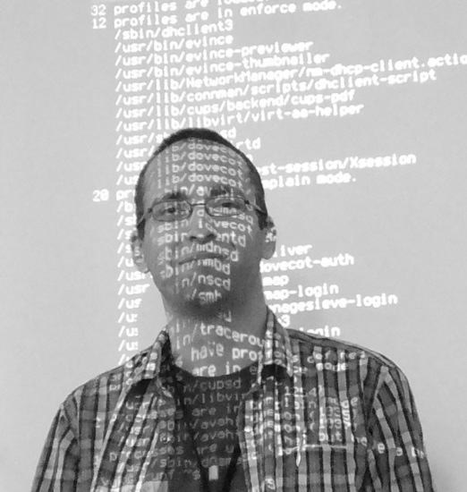

<!DOCTYPE html>
<html lang="en">
<head>

  <!-- Basic Page Needs
  –––––––––––––––––––––––––––––––––––––––––––––––––– -->

  <meta charset="utf-8">
  <title>~ivuk</title>
  <meta name="keywords" content="ivuk, blog, github">
  <!-- <meta name="description" content="">
  <meta name="author" content=""> -->

  <!-- Mobile Specific Metas
  –––––––––––––––––––––––––––––––––––––––––––––––––– -->
  <meta name="viewport" content="width=device-width, initial-scale=1">

  <!-- FONT
  –––––––––––––––––––––––––––––––––––––––––––––––––– -->
  <link href="https://fonts.googleapis.com/css?family=PT+Serif&display=swap" rel="stylesheet">

  <!-- CSS
  –––––––––––––––––––––––––––––––––––––––––––––––––– -->
  <link rel="stylesheet" href="css/normalize.css">
  <link rel="stylesheet" href="css/skeleton.css">

  <style>
    html, body {
      height: 100%;
    }

    .table-container {
      display: table;
      height: 100%;
      width: 100%;
    }

    .table-block {
      display: table-row;
      height: 1px;
    }

    .footer-push {
      height: auto;
    }

    #footer {
	  /* Placeholder footer styles */
	  text-align: center;
      margin-bottom: 2rem;
    }

  </style>

  <!-- Favicon
  –––––––––––––––––––––––––––––––––––––––––––––––––– -->
  <!-- <link rel="icon" type="image/png" href="images/favicon.png"> -->

</head>
<body>
  <div class="table-container">
    <div class="table-block footer-push">

      <!-- Primary Page Layout
           –––––––––––––––––––––––––––––––––––––––––––––––––– -->
      <div class="container">
		<div class="twelve columns" style="margin-top: 2rem">
            <h2><a href="index.html">~ivuk</a></h2>
			<hr />
		</div>
        <div class="row">
			<div class="one-half column">
				<p>
					<br />
				</p>
			</div>
			<div class="one-half column">
				<p>
					<b>Hi!</b>
					I'm Igor.
					<br /><br />
					I like Python, SELinux and Kubernetes. I think that software-defined things are the bee's knees.
				</p>
				<h3>
					Talks & articles
				</h3>
				<ul style="list-style-type:disc;">
					<li><a href="https://github.com/ivuk/Europass-LaTeX-hr">LaTeX Europass template - Croatian translation</a></li>
					<li><a href="rv062011/index.html">Kernel-based Virtual Machine - Slides, Razmjena vještina (06/2011)</a></li>
					<li><a href="fsec092011/index.html">AppArmor - Slides, FSEC (09/2011)</a></li>
					<li><a href="fsec16092012/index.html">SELinux - Slides, FSEC (09/2012)</a></li>
					<li><a href="sok122013/2013-SELinux-Split-Prezentacija.pdf">SELinux - Slides, SOK (12/2013)</a></li>
					<li><a href="sok122013/2013-SELinux-Split-Radionica.pdf">SELinux - Workshop slides, SOK (12/2013)</a></li>
					<li><a href="cnmeetup2019/2019-k8s-fundamentals.pdf">Kubernetes fundamentals - Slides, Kubernetes and Cloud Native Meetup #1 (02/2019)</a></li>
					<li><a href="mbair.html">Ubuntu GNU/Linux on Macbook Air (mid-2013, Haswell)</a></li>
				</ul>
			</div>
        </div>
      </div>  <!-- end primary div.container -->
    </div> <!-- end primary div.table-block -->


    <div class="table-block">
      <!-- Page Footer Layout
           –––––––––––––––––––––––––––––––––––––––––––––––––– -->
      <div class="container">
        <footer id="footer" class="twelve columns">
			<a href="https://github.com/ivuk">GitHub</a>
			<a href="https://hr.linkedin.com/in/igorvuk">LinkedIn</a>
		</footer>
      </div> <!-- end footer div.container -->
    </div>  <!-- end footer div.table-block -->
  </div>
<!-- End Document
  –––––––––––––––––––––––––––––––––––––––––––––––––– -->

</body>
</html>
